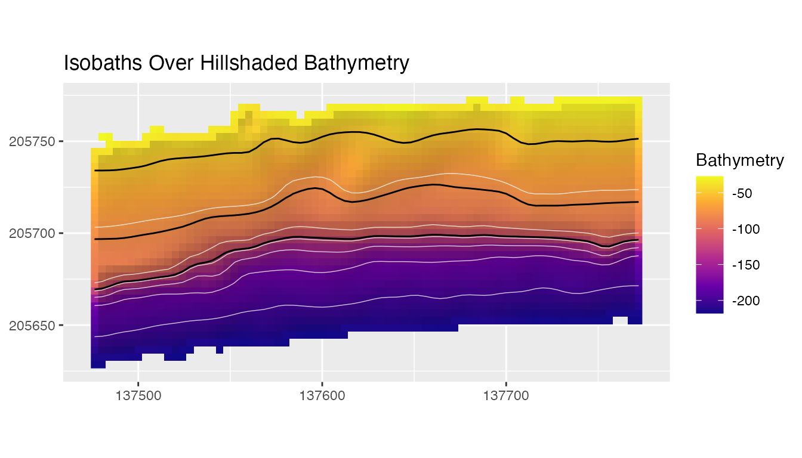

Isobath corridors summarize terrain along depth horizons. They are useful when observations are collected along contours or when terrain structure needs to be compared at equivalent depths while retaining along-contour variability.
bathy <- read_bathy(blueterra_example("hitw"))
prepared <- prepare_bathy(bathy, depth_range = c(-220, -25), smooth = TRUE)
terrain <- derive_terrain(
prepared,
metrics = c("slope", "bpi", "curvature", "surface_area_ratio")
)The example bathymetry stores depth as negative elevation, so contour depths are passed as negative values.
isobaths <- extract_isobaths(prepared, depths = c(-50, -80, -120))
isobaths[, c("contour_value", "depth_label")]
#> class : SpatVector
#> geometry : lines
#> dimensions : 3, 2 (geometries, attributes)
#> extent : 137476.2, 137772, 205669.4, 205756.6 (xmin, xmax, ymin, ymax)
#> coord. ref. : NAD83 / Puerto Rico & Virgin Is. (EPSG:32161)
#> names : contour_value depth_label
#> type : <num> <num>
#> values : -50 -50
#> -80 -80
#> -120 -120
plot_bathy(
prepared,
contours = TRUE,
contour_interval = 25,
vectors = isobaths,
vector_color = "black",
title = "Isobaths Over Hillshaded Bathymetry"
)
Buffers are measured in map units, so the raster should use a
projected CRS. The example raster is projected; longitude/latitude
rasters generate a warning because their map-unit widths are usually not
interpretable distances. Here width = 5 is a one-sided
buffer distance, so the nominal full corridor width is 10 m.
corridors <- make_isobath_corridors(
prepared,
depths = c(-50, -80, -120),
width = 5
)
corridors[, c(
"contour_value", "depth_label", "corridor_id", "buffer_distance",
"nominal_corridor_width", "overlap_policy"
)]
#> class : SpatVector
#> geometry : polygons
#> dimensions : 3, 6 (geometries, attributes)
#> extent : 137471.2, 137777, 205664.4, 205761.6 (xmin, xmax, ymin, ymax)
#> coord. ref. : NAD83 / Puerto Rico & Virgin Is. (EPSG:32161)
#> names : contour_value depth_label corridor_id buffer_distance nominal_corrido~ overlap_policy
#> type : <num> <num> <int> <num> <num> <chr>
#> values : -50 -50 1 5 10 independent_may~
#> -80 -80 2 5 10 independent_may~
#> -120 -120 3 5 10 independent_may~
plot_isobath_corridors(
corridors,
prepared,
isobaths = isobaths,
background_contours = FALSE,
title = "Isobath Corridors and Source Isobaths",
subtitle = "5 m is the one-sided buffer distance (10 m nominal full width)"
)
The black lines are the source isobaths. The corridor polygons buffer those depth horizons by 5 m on each side and define the terrain extraction zones used in the summary. Corridors are independent buffers and may overlap; values in an overlap can contribute to more than one corridor, so corridor summaries are not mutually exclusive or additive.
Extract and Summarize Terrain
cells <- extract_isobath_corridors(terrain, corridors)
head(cells)
#> # A tibble: 6 × 14
#> ID level contour_value depth_label corridor_id buffer_distance
#> <int> <dbl> <dbl> <dbl> <int> <dbl>
#> 1 1 -50 -50 -50 1 5
#> 2 1 -50 -50 -50 1 5
#> 3 1 -50 -50 -50 1 5
#> 4 1 -50 -50 -50 1 5
#> 5 1 -50 -50 -50 1 5
#> 6 1 -50 -50 -50 1 5
#> # ℹ 8 more variables: nominal_corridor_width <dbl>, overlap_policy <chr>,
#> # zone_id <int>, slope_deg <dbl>, bpi_3x3 <dbl>, bpi_11x11 <dbl>,
#> # curvature <dbl>, surface_area_ratio <dbl>
summary <- summarize_isobath_terrain(terrain, corridors)
summary[, c("contour_value", "slope_deg_mean", "bpi_3x3_mean", "curvature_mean")]
#> # A tibble: 3 × 4
#> contour_value slope_deg_mean bpi_3x3_mean curvature_mean
#> <dbl> <dbl> <dbl> <dbl>
#> 1 -50 46.2 -0.01000 0.0163
#> 2 -80 40.0 -0.0209 0.0629
#> 3 -120 77.7 1.25 -3.77The summary compares terrain structure at the selected depth horizons. BPI values should be interpreted using the raster’s stored vertical convention.